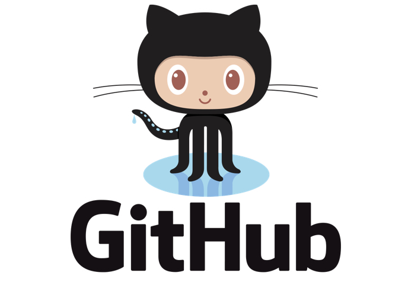

¿Que es Git?
Git, es un software de control de versiones diseñado por Linus Torvalds. Pero ¿qué es control de versiones? Pues bien, se define como control de versiones a la gestión de los cambios que se realizan algún producto. Exactamente es lo que se hace cuando subes y actualizas tu código en la nube, o le añades alguna parte o simplemente le editas cosas que no funcionan, etc. Y, entonces ¿a que le llamamos sistema de control de versiones? Muy sencillo, son todas las herramientas que nos permiten hacer todas esas modificaciones antes mencionadas en nuestro código y hacen que sea más fácil la administración de las distintas versiones de cada producto desarrollado; en otras palabras Git.
Instalando Git
Lo primero es entrar a https://git-scm.com/downloads seleccionar el sistema operativo y esperar a que se descargue el .exe

Escojer el sistema operativo de nuestra conveniencia y pulsar el icono, veremos que se comienza descargar el .exe correspondiente

Una vez finalice la descarga abrimos el archivo y segun la configuración que queramos usar en Git escojemos las opciones correspondientes. A continuacion se relaciona un video mas detallado acerca de la instalación de Git https://www.youtube.com/watch?v=7qzV04C5S-k
Comandos Basicos Git
Existen varios comandos principales los cuales son muy usandos en Git para el manejo y control de las versiones, algunos de estos son:
$ git init:
Esto crea un nuevo subdirectorio llamado .git que contiene todos los archivos necesarios del repositorio, en otras palabras crea un esqueleto de un repositorio Git.
$git clone [url]
Este comando permite clonar un repositorio git en la web, lo cual significa que cualquier proyecto git es descargable y modificable para cualquier persona
$git status
Este comando nos permite ver los cambios locales realizados respecto al branch que nos encontremos, por ejemplo en un proyecto recien clonado no veremos nada si ejecutamos este comando, sin embargo si agregamos o modificamos cualquier archivo veremos que este comando nos permite identificar los archivos modificados
$ git add *.c:
Este comando agrega el o los archivos que escojamos los cuales queramos agregar y tener listos para hacer commit
$ git commit –m 'comentario':
Este comando permite confirmar los cambios que se realizaron y se agregaron mediante el anterior comando "add".
$ git fetch:
Este comando permite revisar y actualizar las ramas que se han creado en el proyecto y poder hacer una copia local de una rama que otra persona este trabajando
$ git merge:
Este comando es uno de los mas usado, se utiliza para fusionar uno o más ramas dentro de la rama que tienes activa
$ git pull:
Este comando permite actualizar tu repositorio local con los cambios del repositorio remoto, si hay conflictos deberas ejecutar un comando merge
$ git push origin master:
Este comando permite enviar tus cambios a un repositorio remoto y actualizarlo, si hay cambios tendras que ejecutar un comando pull y un comando merge para resolver las inconsistencias y poder enviar el push de forma correcta al repositorio remoto
$ git checkout:
Este comando se usa para cambiar de rama y revisar el contenido de tu directorio de trabajo.
A continuacion se anexa un link el cual contiene informacion mas detallada acerca de los comandos en Git. https://git-scm.com/docs/git

¿Que es GitHub?
GitHub es una compañía sin fines de lucro que ofrece un servicio de hosting de repositorios almacenados en la nube. Esencialmente, hace que sea más fácil para individuos y equipos usar Git como la versión de control y colaboración. La interfaz de GitHub es bastante fácil de usar para el desarrollador novato que quiera aprovechar las ventajas del Git. Sin GitHub, usar un Git generalmente requiere de un poco más de conocimientos de tecnología y uso de una línea de comando.

¿Porque usar GitHub?
Es una plataforma que permite crear repositorios de código colaborativo. Es decir, un lugar donde guardar ficheros con código fuente en cualquier lenguaje y ponerlo a disposición de todo aquel que esté interesado. Incluso puedes gestionar los permisos de cada proyecto que subas a la plataforma para que otros opinen, lo modifiquen
¿Colaborar en GitHub?
Github contiene multitud de proyectos de manera abierta. Gracias a esto podrás crear tus propias herramientas basándote en un proyecto o colaborar en algún proyecto.
La mayoría de herraamientas que usas como desarrollador, librerías o frameworks están en Github y puedes contribuir a mejorarlos. Un fork es una funcionalidad de Github que nos permite crear un repositorio en nuestra cuenta que tenga exactamente los mismos archivos, commits e información que otro que hayas elegido. Si haces algún cambio y deseas que se añada al proyecto desde el que has hecho la copia necesitarás hacer un pull request, una propuesta para que los administradores del proyecto principal revisen los cambios producidos y decidan si añadir tu código al proyecto. https://guides.github.com/introduction/flow/
Herramientas parecidas a GitHub
Una alternativa a Github muy conocida es Gitlab que es muy famosa ya que permite repositorios privados gratis, frente a Github que desde hace muy poco no lo permitía. También hay otra alternativa conocida llamada Bitbucket. Es de la empresa Atlassian por lo que se integra fácilmente con herramientas como Trello o Jira.